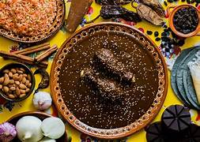
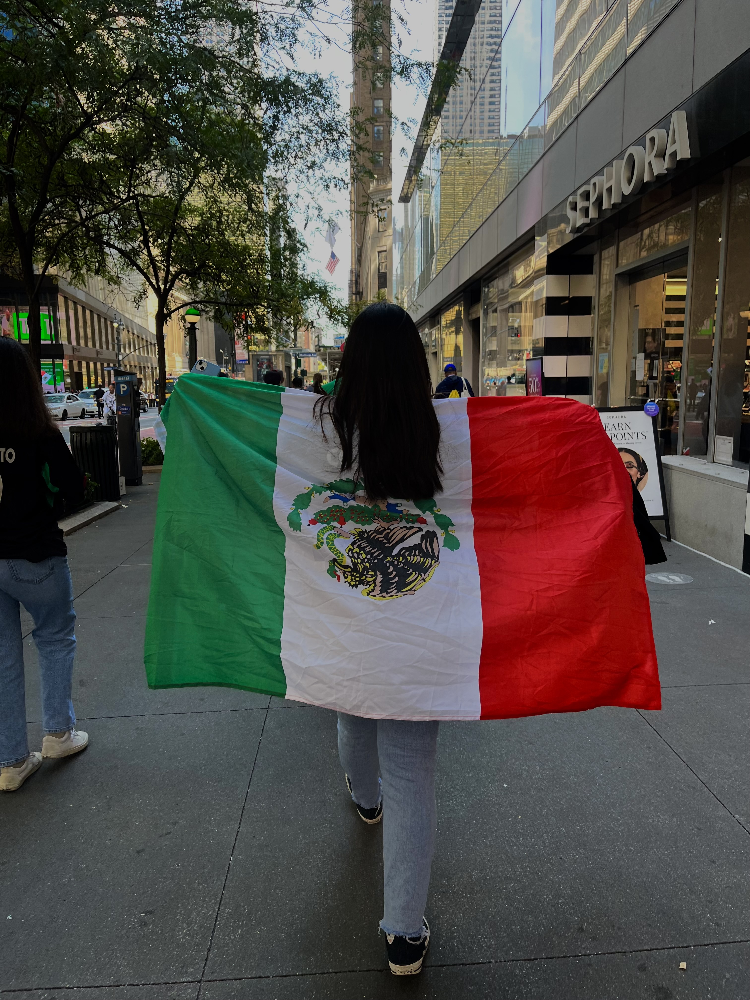
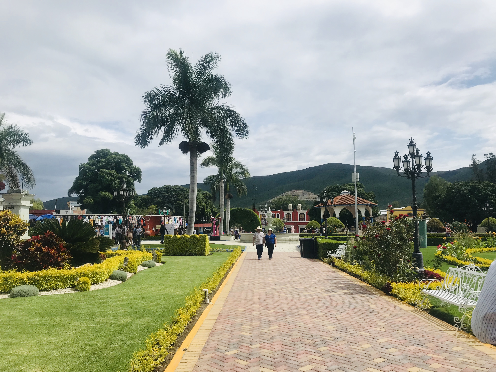

Discovering Puebla: A Rich Tapestry of Music, Food, and Culture
  In this exploration of Puebla, Mexico, my beloved hometown, I will delve into the vibrant melodies and flavors that characterize this region. Puebla is renowned for its traditional music, including the captivating sounds of folkloric sones and the lively rhythms of jarabe, which reflect the deep cultural roots and history of the area. Alongside its rich musical heritage, Puebla boasts an incredible culinary scene, famous for its Mole Poblano, a delectable sauce enriched with a complex blend of flavors, and the iconic Chiles en Nogada, a dish that beautifully showcases the colors of the Mexican flag. Beyond its music and gastronomy, Puebla is also celebrated for its stunning colonial architecture, such as the UNESCO World Heritage-listed Puebla Cathedral, and the breathtaking Cholula Pyramid, one of the largest in the world. I will take you on a journey through Puebla’s enchanting culture, revealing the warmth and passion of its people and their traditions